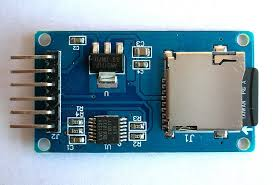
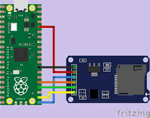
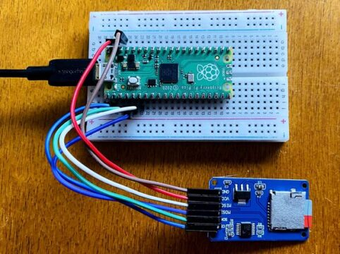
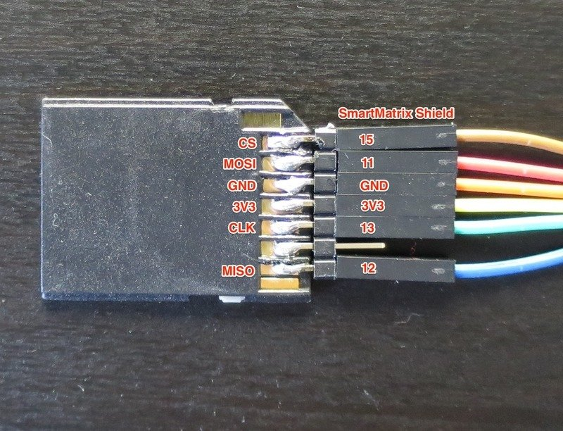
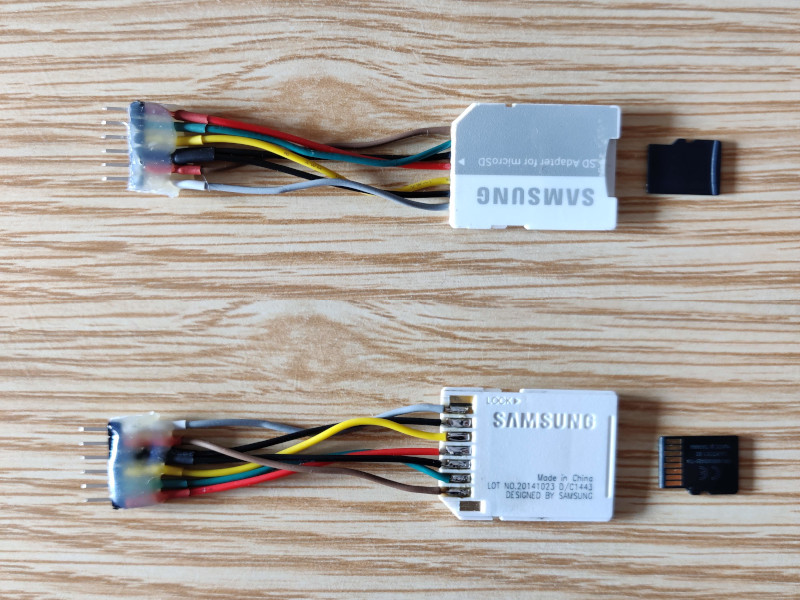

MicroSD Card
Diaz Garduño Alan Fernando
No. Control: 18210990
Materia: Sistemas Programables
Prof. Rene Solis Reyes
Descripción general
El módulo de tarjeta Micro SD gunto con MicroPython, le enseñaremos a la Pico a comunicarse con el módulo de tarjeta SD. Este módulo nos ayuda a que la Pico guardar y leer datos desde una pequeña tarjeta SD, como si fuera una cámara.
Módulo/adaptador de tarjeta SD
El módulo de tarjeta SD es especialmente útil para proyectos que requieren registro de datos.
El voltaje de funcionamiento de las tarjetas micro SD es de 3.3V.

Conexión entre la placa Pi Pico y el módulo de tarjeta SD



